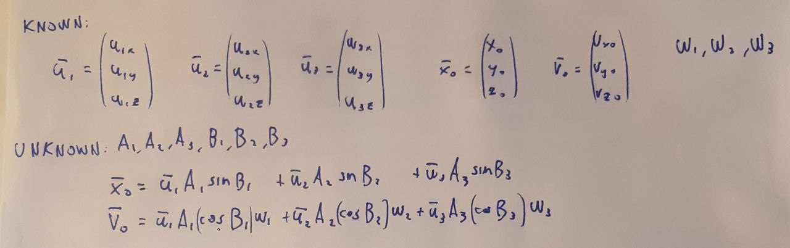

üá¨üáß
Visualizzatore di modi normali
Autore: Mattia Micheletta Merlin; Data: 26 Maggio 2024
Per un sistema oscillatorio a più gradi di libertà, un modo normale è un tipo di movimento in cui il sistema oscilla dopo essere stato disturbato in prossimità del suo stato di equilibrio. Qualsiasi oggetto fisico, come una corda vibrante, un ponte, un edificio o una molecola possiede un certo numero, a volte infinito, di modi normali di vibrazione che dipendono dalla sua struttura, dai suoi costituenti e dalle condizioni ai limiti che gli vengono imposti. Il numero di modi normali è uguale a quello dei gradi di libertà del sistema. Una frequenza naturale di vibrazione è associata a ogni modo normale.
Studiamo adesso i modi normali di alcuni semplici sistemi: iniziamo con due pendoli collegati da una molla. Le cordinate generalizzate di questo sistema sono i due angoli dei pendoli rispetto alla verticale, che chiameremo \( \theta \) e \( \phi \). Il grafico cartesiano in figura è lo spazio delle configurazioni con \( \theta \) in rosso sull'asse orizzontale e \( \phi \) in verde sull'asse verticale, un punto in questo spazio raprresenta uno stato del sistema. Usa la simulazione qua sotto cambiando le condizioni iniziali con gli slider o i campi di testo (e poi schiaccia start per farla partire e stop per fermarla): vedrai che nessuno dei due pendoli oscilla con una siunsoide perfetta perché è tirato dalla molla.
Troviamo adesso i modi normali: un punto di equilibrio del sistema è quando i due pendoli sono in posizione verticale, cioè \( \theta = \phi = 0 \), cioè nell'origine dello spazio delle configurazioni (la lunghezza a riposo della molla è la distanza tra i due pendoli in questa posizione). In questo punto di equlibrio (stabile) il potenziale può essere approssimato da un paraboloide (facendo l'espansione di Taylor al secondo ordine), giusto per curiosità eccone l'espressione analitica:
$$ V(\theta, \phi) = \frac{1}{2}(m_1gl + kl^2)\theta^2 + \frac{1}{2}(m_2gl + kl^2)\phi^2 - kl^2\theta\phi $$
dove \(l\) è la lunghezza dei pendoli, \(m_1\) e \(m_2\) le loro masse, \(k\) la costante elastica della molla e \(g\) l'accelerazione di gravità. In questo caso il potenziale è una forma quadratica, e i modi normali sono gli autovettori della matrice associata a questa forma, cioè la matrice Hessiana del potenziale. Questa matrice è:
$$ \begin{pmatrix} m_1gl + kl^2 & -kl^2 \\ -kl^2 & m_2gl + kl^2 \end{pmatrix} $$
E gli autovettori sono:
$$ \begin{pmatrix} 1 \\ 1 \end{pmatrix}, \begin{pmatrix} m_2 \\ -m_1 \end{pmatrix} $$
che corrispondono a due modi normali: uno in cui i due pendoli oscillano in fase e uno in cui oscillano in controfase. Nella simulazione sotto puoi vedere questi due modi normali sullo spazio delle configurazioni (le linee nere inclinate): osserva come cambiando le masse una di esse cambia inclinazione. Il moto del sistema in generale è una combinazione lineare di oscillazioni su questi due modi normali, osserva come le proiezioni dello stato del sistema sui modi normali oscillino con una sinusoide perfetta. Inoltre se vuoi vedere i modi normali da soli, modifica le condizioni iniziali affinché lo stato del sistema si trovi su una delle sue linee e poi fai partire la simulazione.
Gli autovalori di questa matrice sono uguali al parametro \( \omega^2 \) della sinusoide, cioè la frequenza naturale di vibrazione del sistema al quadrato. In questo caso sono:
$$ \omega_1^2 = \frac{g}{l} , \quad \omega_2^2 = \frac{g}{l} + \frac{k}{m_1 || m_2} $$
Ora consideriamo un sistema con tre gradi di libertà: tre perline (di uguale massa \(m\)) che si possono muovere lungo delle guide posizionate a triangolo, collegate da tre molle (di uguale costante elastica \(k\) e lunghezza a riposo \(l\)) come in figura. Vedi come lo spazio delle configurazioni adesso è tridimensionale (ogni asse è la distanza di una perlina dal centro). Facendo calcoli analoghi a prima, cioè espandendo con Taylor il potenziale attorno al punto di equilibrio, troviamo i tre autovettori che rappresentano i tre modi normali del sistema. Questi sono:
$$ \begin{pmatrix} -1 \\ 1 \\ 1 \end{pmatrix}, \begin{pmatrix} 0 \\ -1 \\ 1 \end{pmatrix}, \begin{pmatrix} 2 \\ 1 \\ 1 \end{pmatrix} $$
e sono rappresentati nel grafico tridimensionale con le linee grige inclinate. Le frequenze naturali di vibrazione sono:
$$ \omega_1^2 = \frac{16 l^2 - 12 l}{3m} , \quad \omega_2^2 = \frac{16 l^2 - 10 l}{m} , \quad \omega_3^2 = \frac{112 l^2 - 30 l}{3m} $$
Nelle seguenti simulazioni ci sono prima i tre modi normali uno alla volta e poi una combinazione lineare di essi.
Purtroppo non sono riuscito a fare una simulazione interattiva per questo sistema 3d, ovvero una nella quale si fa evolvere il sistema a partire da delle condizioni iniziali scelte. Non ci sono riuscito perchè non sono riuscito a risolvere le equazioni che ho riportato qui sotto:

Se qualcuno dei lettori sa come fare, mi contatti grazie.